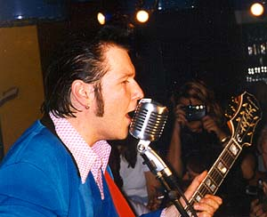

Atomic
Swing
Atomic
Swing
Фотографии с концертов Бюска в Москве:
His True Believers (1997-1999):
Vidar Busk - гитара, вокал
Arne Rasmussen - губная гармоника, back-вокал
Rune Endal - контрабас, бас-гитара, back-вокал
Martin Windstad - ударные, back-вокал
Johnny Augland - клавиши, гитара
His Two Believers (2000-*):
Vidar Busk - гитара, вокал
Bjorn Holm - контрабас, бас-гитара
Martin Windstad - ударные, back-вокал
Купить все диски Vidar Busk & His True Believers можно в норвежском онлайн-магазине (http://www.akersmic.no) при наличии кредитной карты. С некоторым трудом вполне возможно разобраться в названиях полей для заполнения, указанных по-норвежски.
Atomic
Swing
Sho' Nuff (386k)
(Vidar Busk / Johnny Augland / R.C.Finnegan)
West Side Baby (430k)
(Dallas Bartley / John Cameron)
She's a Baby (474k)
(Vidar Busk / R.C.Finnegan)
Atomic Swing (fragment) (480k)
(Vidar
Busk / ErlendGjerde / R.C.Finnegan)
 I
Came Here To Rock
I
Came Here To Rock
Mr. Sugar (328k)
(Vidar Busk/Johnny Augland/David C.York)
Get Up Baby (505k)
(Vidar Busk / David C.York)
Groovy Gravy (545k)
(Arne Rasmussen)
Hard Times (657k)
(David C.York)
 Stompin'
Our Feet With Joy
Stompin'
Our Feet With Joy
Stompin' Our Feet With Joy (547k)
(David
C.York)
Live My Life Too Fast (503k)
(David C.York)
Shrimps At South Peak (347k)
(Vidar Busk/Johnny Augland)